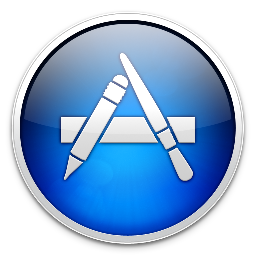
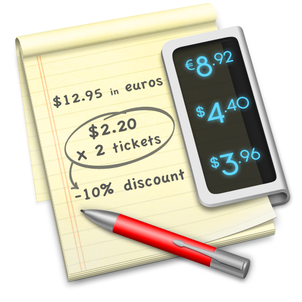
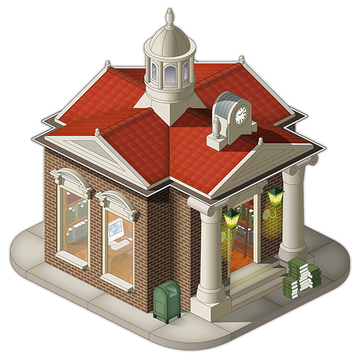
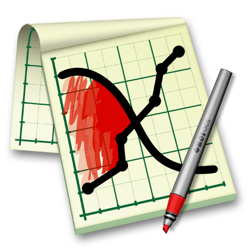
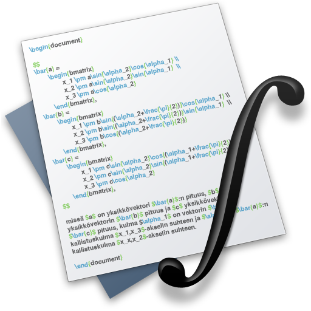
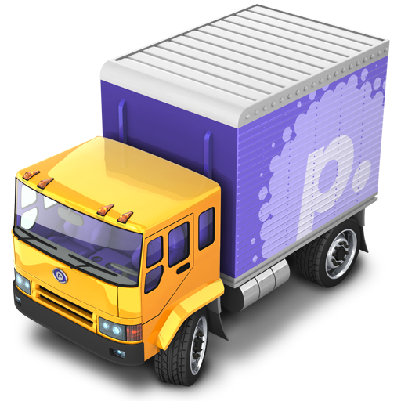
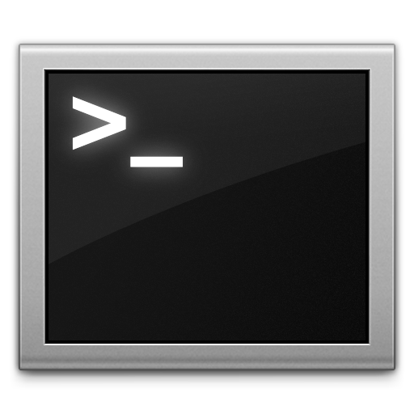

Useful Mac Apps for Scientists
2011-01-27
Note: This post is from 2011 and out of date. Some of the apps below no longer exist. It’s kept for historical interest.

Even if you, quite reasonably, don’t know what computational physics is, I’m sure you can imagine that what I do most days involves spending a lot of time sat with a computer. I choose to use one with a glowing white fruit on it, as do many, for all sorts of reasons. One of the reasons I like Apple computers is the quality of the software available for OS X, and as the introduction of the Mac App Store has put the spotlight on Mac apps I thought I’d write about some of my favourite for doing science.
The apps I’m writing about are all of a sort, and its perhaps easiest to describe them by what they are not. First, they’re not the behemoths of scientific computing, the big Ms: Mathematica, Matlab, Maple and Multiphysics. These — as you will know if you’ve used them — are powerful pieces of kit, and come with price tags to match. Their user interfaces are ported across all platforms. In my opinion, these interfaces can be clumsy1 and slow compared to those tailored to the system they will be used on.
Second, they’re not applications specific to one narrow area. There’s little value in me recommending the quantum chemistry or molecular dynamics software we use — if you need to use them you will likely know about them anyway.
So what sort are these apps? Well, I’d say they all follow the Unix philosophy, ‘Write programs that do one thing and do it well.’2 They’re written in Cocoa and each show care has been taken in getting the look and feel of great Mac software. They’re written by small, indie companies, or in one case a mathematician with open source help. They’re inexpensive and good value.
Soulver
Acquilia’s Soulver is like TextEdit with a built-in calculator. Start putting in numbers and it will tally up on the right. You can add all the constants you might wish to drop in, and reference values from previous lines. I think the demo video demonstrates its usefulness better than any further rambling from me.

Where before I might have resorted to launching a spreadsheet to say, convert some results to atomic units — with all the slowness and faffery that brings — now I can fire up what is essentially a text file that can do sums. It’s simple and super. I also like the ‘Big Answer’ button, which makes final results more exciting, even if I am still out by an order of magnitude.
One thing I would like is support for greek alphabet constants, those 26 romans get used up very quickly.
Papers
Papers is iTunes for scientific papers. It solves the problem of having hundreds of PDFs in odd folder structures, with opaque names, in the same way that you don’t have to worry about where your MP3s are once iTunes is taking care of them. Drag in a paper you’ve downloaded from some journal and it will automatically search the online databases to look up the author, journal, keywords, DOI and any other bit of metadata you might use. Magic.

If you’re Cupertino all the way, there are syncing iPhone and iPad apps so you can keep all your literature handy and searchable when you’re out and about.
The developers have avoided the icon style of ‘a piece of paper tilted to the left’, instead making a nice little isometric library, which brings back fond memories of SimCity 2000. You can even see an iMac G5 through the window if you look close enough.
Mekentosj offer an educational discount — you just have to email them.
OmniGraphSketcher
OmniGraphSketcher makes beautiful graphs, very quickly. Copy two columns of text from anywhere — output from Terminal or a Console log, a spreadsheet, a website, wherever — separated with spaces, commas or semicolons. Paste them into OmniGraphSketcher and you’ve got a graph.

Everything is made as simple as possible. The size of the window is the size of the graph — shown in the status bar in pixels for bitmaps and cm for vectors. To adjust the range of the axes, just click and drag them. And the ability to fill in areas of the plot, with boundaries that lock to the curves, makes highlighting the important bits easy.
It will make prettier and clearer graphs than Matlab or Gnuplot and it will take you a quarter of the time. You won’t have to remember what the keyword for ‘red’ is or how to adjust the axes.
The developers claim it to be halfway between a scientific plotter and a drawing package, but really I find it almost perfect for making scientific diagrams. It lacks logarithmic scaling and 3D plots, but the built-in OS X utility Grapher serves me well enough in the few cases I need those.
The OmniGroup has an Education Store with good discount.
TexShop
Richard Koch’s TeXShop edits, typesets and previews TeX files. I downloaded it as part of the free MacTex bundle. The bundle is great for starting off writing with TeX — there’s enough tags and layout features to learn without having to worry about what applications to download. MacTeX thus gives you everything so you can try them all and see what you like. Obviously, this means it’s a huge (~1 GB) download.

TeXShop is simple to use, with a text editor for input and a preview of the PDF once the document has been successfully typeset. The Macros menu offers prefabbed layouts, tables, references and so on. Personally, all I’m using TeXShop for now is for writing, then using the keyboard shortcuts for ‘Attach Bibliography’, ‘Typeset’ and ‘Preview PDF’. I’m certain I’ll switch to my usual text editor and a couple of commands soon, but I’ve been very happy using TeXShop as my training wheels for TeX.
I use this replacement icon as the original hurts my brain a bit.
{kind=link}
Transmit
Panic Transmit is the best FTP client on OS X. I hadn’t intended to include Transmit at first, as FTP is of course useful to a far broader group of people — web developers, particularly. However, I upgraded to Transmit 4 a few weeks ago and was wowed by a new feature which is already helping me to work quicker.

In computational science we often log into more powerful machines loaded with simulation software to run the codes we’ve written — it might be a multicore desktop in the institute or a supercomputer facility in a different city. This usually involves working with files locally and then sending them over to one of the big machines to compile and run — which would previously involve a long series of terminal commands. Transmit 4 has this wonderful Disks feature which allows me to mount a folder on a university computer as a drive on my Mac, via SFTP, so I can drag and drop files to it. Utterly brilliant.
Finally, I should give a mention to the window in which I spend most of my time: typing Vim commands into the trusty old Terminal.

Another multi-platform tool I find indispensible is the remarkable, free, world-conquering Dropbox. As well as syncing all my working projects between computers and my phone, the version tracking has saved me many times after a misplaced Save, and even given me an up-to-the-minute backup of my work when a hard drive failed.3
Footnotes
Write once, run everywhere, enjoy nowhere.↩︎
This is perhaps the feeling of ‘app’ we’ve come to know from using iPhones and the like.↩︎
I also backup daily to Time Machine.↩︎